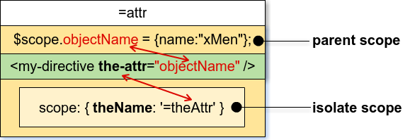
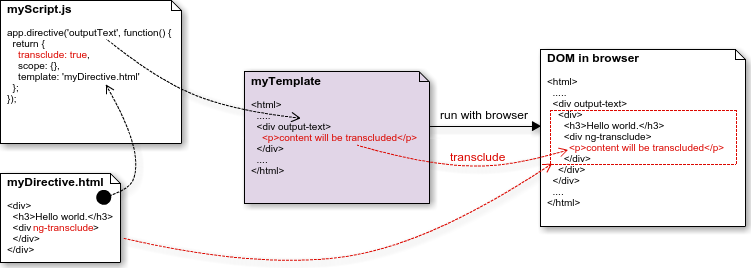

Directives là gì?
Các thuộc tính, id, class, name, onClick, … của một DOM element được gọi chung là directives. AngularJS sẽ dựa vào những directive đó để đính kèm các chỉ thị hoặc các sự kiện tới DOM element cần xử lý, thậm chí là thay đổi cấu trúc của DOM.
AngularJS có sẵn một bộ directives: ng-app, ng-module, ng-controller, … Để phát triển ứng dụng với AngularJS thì cần phải nắm rõ cách hoạt động và mục đích sử dụng của những directive đó. Trong phạm vi bài viết này sẽ không giải thích và hướng dẫn cách sử dụng những directive sẵn có của AngularJS.
Cách directives được biên dịch
Khi một trang được load thì web browser sẽ tự động parses HTML vào DOM. Việc biên dịch HTML được thực thi trong 3 bước:
- $compile sẽ quét qua các DOM elements, nếu compiler tìm thấy element nào có khai báo directive, thì directive tương ứng sẽ được thêm vào danh sách các directives phù hợp với DOM element. Một element có thể khai báo nhiều directives.
- Khi một DOM element khai báo nhiều directives, compiler sẽ sắp xếp thứ tự biên dịch các directives theo thuộc tính priority của mỗi directive. Compiler functions của mỗi directive sẽ được thực thi. Mỗi compiler function có thể làm thay đổi DOM. Mỗi compiler function phải trả về một link function, xử lý liên kết giữa DOM và scope.
- $compile liên kết template với scope bằng cách gọi linking function đã liên kết từ bước 2. Đăng ký theo dõi các elements và thiết lập cơ chế $watchs với scope của directive được cấu hình.
Sau khi thực thi biên dịch HTML thì giữa scope và DOM sẽ có sự ràng buộc (a live binding), mỗi một thay đổi ở model trên compiled scope sẽ được ánh xạ vào DOM.
Tạo custom directive
Tên của Angular Directives được khai báo theo kiểu camelCase.
Khi khai báo tên một directive thì tốt nhất bạn nên đặt thêm tiền tố, mục đích là trách bị trùng tên với các từ khoá của Angular hoặc của framework Javascript nào khác có sử dụng trong dự án. Thêm nữa, trong tương lai khi AngularJS nâng cấp version thì sẽ có bổ sung thêm các từ khóa có thể trùng với tên directive mà bạn đã đặt, bạn sẽ mất thời gian để chỉnh sửa lại.
VD:
Khai báo directive
angular.module('demoModule', [])
.directive('demoDirective', function(){
return {
// TODO
};
});
Khi sử dụng
<p demo-directive >
Các thuộc tính khai báo
restrict
khai báo kiểu directive. Có các giá trị (A, E, C, M) tương ứng 4 kiểu directive.
- Kiểu attribute (A)
<div directive>
- Kiểu element (E)
<directive></directive>
- Kiểu class (C)
<div class=”directive”>
- Kiểu comment (M)
<!-- directive: directive -->
VD:
index.html
<div ng-app="demoModule">
<div ng-controller="demoController">
<ANY demo-directive>
<demo-directive></demo-directive>
<ANY class="demo-directive">
<!-- directive: demo-directive -->
</div>
</div>
template
Định nghĩa template, phần hỉển thị nội dung cho directive của bạn (không sử dụng nếu dùng templateURL).
VD:
var myApp = angular.module('demoModule', []);
myApp.directive('demoDirective', function(){
return {
restrict: "ACEM",
template: "<h3>This is demo directive</h3>"
}});
templateUrl
Khai báo đường dẫn (Url) của file định nghĩa template được dùng cho directive. Được sử dụng khi template của directive phức tạp, hoặc bạn muốn tách riêng phần định nghĩa template directive ra một file khác. không sử dụng nếu dùng template, nếu không directive sẽ ưu tiên sử dụng nội dung trong template.
VD:
var myApp = angular.module('demoModule', []);
myApp.directive('demoDirective', function(){
return {
restrict: "AE",
templateUrl: "../templates/demoDirective.html"
}});
priority
Thứ tự thực thi directive.
Khi một DOM element khai báo nhiều directive thì cần phân định rõ thứ tự thực thi directive, vì vậy priority được dùng để sắp xếp các directive trước khi compile function được gọi. Priority được khai báo kiểu number, theo thứ tự thực thi 0 → 1 → 2 → … → n (Giá trị mặc định của priority là “0”).
VD:
Có 3 directive
var myApp = angular.module('demoModule', []);
myApp.directive('directive1', function(){
return {
restrict: "A",
template: "<h3>This is directive1</h3>",
priority: 1
}});
myApp.directive('directive2', function(){
return {
restrict: "A",
template: "<h3>This is directive2</h3>",
priority: 2
}});
myApp.directive('directive3', function(){
return {
restrict: "A",
template: "<h3>This is directive3</h3>",
priority: 3
}});
Khai báo sử dụng
<p directive2 directive1 directive3 ></p>
Thứ tự thực thi
directive1 -> directive2 -> directive3
Trường hợp các directive có giá trị priority bị trùng nhau thì trình biên dịch sẽ thực thi directive được khai báo trước trong thẻ HTML.
VD:
Sử dụng 3 directive ở ví dụ trên, nhưng khai báo “priority: 1” cho cả 3.
<p directive2 directive1 directive3 ></p>
Thứ tự thực thi
directive2 -> directive1 -> directive3
Các “pre-link” function cũng được thực thi theo thứ tự của priority, còn với “post-link” thì được thực thi theo thứ tự ngược lại.
Nếu các directive đó đều có tác động đến việc hiển thị của DOM element, thì trình biên dịch sẽ ưu tiên xử lý của directive có giá trị priority nhỏ nhất.
replace
Replace nhận giá trị kỉểu boolean, mặc định là false.
- True: Thay thế DOM element khai báo directive bằng nội dung của directive tương ứng, bao gồm nội dung bên trong template và dữ liệu.
- False: Đưa nội dung của directive (bao gồm nội dung bên trong template và dữ liệu) vào bên trong DOM element khai báo directive đó.
VD:
var myApp = angular.module('demoModule', []);
myApp.directive('demoReplace', function(){
return {
restrict: "A",
template: "<h3>This is directive1</h3>",
replace: true
}});
Khai báo sử dụng
<p demo-replace ></p>
Kết quả
<h3 demo-replace >This is directive1</h3>
scope
Trước hết các bạn cần hiểu về khái niệm scope trong AngularJS.
Mặc định thì directive sẽ lấy scope cha bên ngoài, nhưng trong một số truờng hợp chúng ta muốn directive khai báo thêm các thuộc tính và function khác chỉ sử dụng bên trong nội bộ directive, mà lại không làm ảnh huởng đến scope cha bên ngoài thì có 2 lựa chọn:
- A child scope: scope này thừa kế từ scope cha bên ngoài, và có thể khai báo thêm các property, function khác chỉ sử dụng đuợc bên trong directive đó.
- An isolated scope: là một scope riêng mới, không thừa kế gì từ scope bên ngoài, chỉ tồn tại mỗi mình nó.
Phần bên dưới sẽ giải thích về sự khác nhau giữa child scope và isolate scope trong Directives.
Child scope
Khai báo sử dụng child scope: scope: true
Ở phần demo trên, khi bạn thay đổi giá trị ở textBox Parent scope thì giá trị ở textBox Child scope cũng thay đổi theo, đó là do directive đã khai báo sử dụng child scope (scope: true) nên scope này thừa kế từ scope cha. Mỗi một thay đổi trên thuộc tính thừa kế từ scope cha, thì thuộc tính đó cũng được ánh xạ trên child scope thừa kế và ngược lại cũng vậy.
Riêng thuộc tính được khai báo thêm bên trong child scope thì scope cha không thể truy cập được. Như ở ví dụ trên thì dòng chữ “This text is the specific property of the child scope” là giá trị của thuộc tính được khai báo thêm bên trong child scope thừa kế từ scope cha, nên scope cha không thể truy cập được.
Isolate scope
Khai báo sử dụng isolate scope: scope: {}
Khi khai báo scope: {} thì directive đó sẽ có scope riêng biệt bên trong nó để sử dụng. Mọi sự thay đổi của scope cha bên ngoài sẽ không ảnh hưởng gì đến isolate scope bên trong và ngược lại.
Tương tự như phần demo của child scope, nhưng bây giờ khi bạn thay đổi giá trị ở textBox Parent scope thì giá trị ở textBox Isolate scope không hề thay đổi theo, và ngược lại cũng vậy. Đó là do directive đã khai báo sử dụng isolute scope (scope: {}) nên scope này không thừa kế gì từ scope cha. Mỗi một thay đổi trên scope cha đều không hề ảnh hưởng đến isolute scope và ngược lại cũng vậy. Scope cha không thể truy cập vào isolate scope.
Sử dụng isolate scope cho truờng hợp khi chúng ta tạo một custom directive, và muốn tái sử dụng directive đó. Nhưng sử dụng isolate scope không có nghĩa là không truy cập được vào scope cha bên ngoài. AngularJS cung cấp 3 kiểu khai báo cho thuộc tính isolate scope bên trong để có thể nhận các giá trị của scope cha bên ngoài.
1. Khai báo ‘@’ hay ‘@attr’
Nếu chỉ khai báo ‘@’ cho tên thuộc tính đại diện trong isolate scope, thì Angular sẽ tự hiểu tên thuộc tính đại diện cùng tên với thuộc tính khai báo ở DOM element, nhận giá trị từ thuộc tính của scope cha. Như hình mô tả bên dưới, các bạn có thể thấy tên thuộc tính đại diện “theName” trong isolate scope khai báo ‘@’ cùng tên với thuộc tính khai báo “the-name” ở DOM element

Nếu khai báo ‘@theAttr’ cho thuộc tính đại diện trong isolate scope, thì Angular sẽ hiểu thuộc tính đại diện chỉ nhận vào giá trị của một thuộc tính khai báo cụ thể ở DOM element, nhận giá trị từ thuộc tính của scope cha. Như hình mô tả bên dưới, các bạn có thể thấy thuộc tính đại diện “theName” trong isolate scope khai báo ‘@theAttr’ cùng tên với thuộc tính khai báo “the-attr” ở DOM element

Như vậy, điểm khác của khai báo ‘@attr’ với ‘@’ là muốn tách bạch tên thuộc tính đại diện với tên thuộc tính khai báo ở DOM element, việc sử dụng các thuộc tính của parent scope sẽ không bị phụ thuộc vào tên khai báo, mà chỉ thông qua các tên đại diện.
Các bạn hãy nhìn vào những mũi tên trong hình mô tả khai báo ‘@’ và ‘@attr’ bên trên, chúng đều chỉ có một chiều từ parent scope đi xuống isolate scope. Như vậy, điều quan trọng nhất khi sử dụng kiểu thuộc tính khai báo ‘@’ và ‘@attr’ đó là, mỗi một thay đổi ở parent scope thì sẽ làm ảnh hưởng đến giá trị nhận vào ở isolate scope, nhưng sự thay đổi ở isolate scope thì không hề ảnh hưởng đến parent scope (one way binding).
Khai báo ‘@’ và ‘@attr’ chỉ nhận vào giá trị kiểu string.
2. Khai báo ‘=’ hay ‘=attr’
Sử dụng tương tự như khai báo ’@’ và ‘@attr’ đã được gỉải thích ở trên, điều khác biệt là mỗi một thay đổi ở parent scope thì sẽ làm ảnh hưởng đến giá trị nhận vào ở isolate scope, và ngược lại cũng vậy, mọi thay đổi trên giá trị nhận vào ở isolate scope cũng ảnh hưởng đến parent scope (two way binding).

Khai báo ‘=’ và ‘=attr’ nhận vào giá trị kiểu object. Vì khai báo ‘=’ có tính đồng bộ nên không thể truyền vào một thuộc tính của một object, mà phải truyền vào cả object.
3. Khai báo ‘&’ và ‘&attr’:
Sử dụng tương tự như khai báo ’@’ và ‘@attr’ đã được gỉải thích ở trên, nhưng khai báo ‘&’ này dùng để gọi một function được khai báo ở parent scope vào sử dụng bên trong directive.
transclude
Transclusion trong Directives
Từ “transclusion” là một từ không có nghĩa trong từ điển nhưng định nghĩa về nó có thể tìm thấy trên trang Wikipedia hoặc một số trang khác. Hầu hết các trang định nghĩa “transclusion” như sau:
“Nhúng một tài liệu hoặc một phần tài liệu vào trong một tài liệu khác bằng tham chiếu” (wiki/transclusion)
Giống như việc bạn khai báo gọi một file CSS, file Javascript vào trang HTML. Hay cũng giống như việc bạn chia template ra từng phần header, footer, sidebar, … và khi viết nội dung một template bạn sẽ nhúng từng thành phần đó vào trong để tạo thành một file hoàn chỉnh.

Thuộc tính khai báo transclude nhận giá trị kiểu boolean, mặc định là false, khi đó nội dung của directive sẽ thay thế hoàn toàn cho nội dung bên trong DOM element khai báo directive đó. Khi bạn khai báo “transclude: true” thì trong template của directive cần chỉ rõ nơi sẽ chứa nội dung được đưa vào bằng “ng-transclude”. Hình minh họa bên dưới sẽ giúp bạn hình dung dễ hơn về cách hoạt động của “transclusion” trong Angular Directives.

Như hình minh họa ở trên thì nội dung bên trong cặp thẻ <div output-text></div> sẽ được lấy ra và đưa vào trong cặp thẻ <div ng-transclude></div> của directive.
compile
Như đã giới thiệu ở phần Cách directives được biên dịch thì compiler sẽ thực hiện việc biên dịch các directive. Trong một số trường hợp bạn muốn thay đổi cấu trúc HTML của directive tùy theo điều kiện, mà việc này không thể đặt template cứng thì bạn có thể sử dụng khai báo function compile() hay link() trong directive để tái cấu trúc template cho directive khi được compiler biên dịch ra giao diện. Function compile() sẽ chỉ chạy một lần duy nhất. Function compile() khi kết thúc sẽ trả về function link(), và link() sẽ được gọi ngay sau khi directive được biên dịch xong. Nếu khai báo compile() chỉ trả về một function link(), thì mặc định Angular sẽ hiểu đó là postLink.
Ví dụ:
var myApp = angular.module("demoModule", []);
myApp.directive('myDirective', function() {
return {
restrict: 'AE',
compile: function(element, attributes) {
// do one-time configuration of element.
var linkFunction = function($scope, element, atttributes) {
// bind element to data in $scope
}
return linkFunction;
}
}
});
Như ví dụ trên thì compile nhận vào 2 tham số: element và attributes.
- element là đối tượng tham chiếu đến DOM element ngoài cùng, chứa tất cả các DOM element khác bên trong directive đó.
- attributes là đối tượng chứa tất cả các thuộc tính của DOM element. Để truy cập đến các thuộc tính thì bạn phải viết attributes.type.
Còn linkFunction nhận vào 3 tham số: $scope, element và attributes.
- $scope là đối tượng scope bình thường, hoặc childScope hoặc isolateScope tùy theo khai báo scope của directive đó.
- Còn element và attributes tương tự như ở khai báo compile.
link
Function link được khai báo khi chúng ta muốn đính kèm xử lý tác động, làm thay đổi nội dung phần hiển thị của directive. Chúng ta có thể dùng Javascript hoặc JQuery, nhưng trường hợp trên một giao diện có sử dụng nhiều directive có cùng một khai báo thì sẽ rất khó xác định chính xác vị trí của DOM element cần xử lý.
Khai báo link function cho directive có thể xử lý được việc hiển thị DOM elements trong phạm vi directive đó, mà không cần phải dùng Javascript selector đến chính xác DOM element cần xử lý. Như vậy, có thể hiểu khi một directive được $compile biên dịch, nó cũng sẽ được đính kèm các xử lý DOM elements bên trong đã được định nghĩa sẵn bởi link function.
VD:
Link function được chia làm 2: preLink và postLink.
- preLink: là xử lý được tự động thực thi sau khi directive được compiler biên dịch xong.
- postLink: là xử lý được đính kèm vào directive sau khi directive được compiler biên dịch xong, và preLink thực thi xong.
Sự khác nhau giữa compile và link
Mục đích của việc khai báo compile và link đều là tác động, làm thay đổi nội dung hiển thị. Vậy khi nào chúng ta dùng compile, khi nào dùng link?
Khai báo function compile() được sử dụng khi chúng ta muốn thực thi việc xử lý nội dung hiển thị của directive trước khi được compiler biên dịch ra giao diện. Và compile trả về một function link() cụ thể, function link() này sẽ được đính kèm vào directive.
Khai báo function link() được sử dụng khi chúng ta muốn đính kèm xử lý hiển thị cho directive, và function link() chỉ được thực thi sau khi directive được compiler biên dịch xong. Khác với compile, việc khai báo xử lý cho function link() có thể là interface, và implement xử lý đó ở ngoài.
Thường chỉ khai báo một trong hai function, hoặc là compile, hoặc là link. Nếu vô tình khai báo cả 2 function compile và link, thì chỉ các function link() được khai báo trong compile được thực thi.
Ví dụ:
require
Khi bạn muốn sử dụng controller của một Directive khác, thì khai báo thuộc tính “require” để yêu cầu sử dụng controller của Directive cần sử dụng. Controller của những Directive được yêu cầu sẽ được nhúng (inject) vào trong link function của Sirective yêu cầu tại vị trí tham số thứ tư. Khai báo “require” nhận vào giá trị là một string, hoặc một mảng strings tên của các Directive. Mặc định tên của Directive sẽ đại diện cho phần thể hiện của controller của Directive đó. Nếu truyền vào là một mảng strings thì sẽ gọi các Directive theo thứ tự tương ứng trong mảng. Nếu không có Directive nào được tìm thấy hay Directive được yêu cầu không có controller thì sẽ bị báo lỗi.
Khai báo tên (phần hiển thị của controller) các Directive được yêu cầu với tiền tố như sau:
“element hiện tại”: Là element khai báo/sử dụng Directive đang được phát triển.
-
Không có tiền tố: Xác định controller được gọi trên element hiện tại. Nếu không tồn tại controller được gọi thì sẽ ném ra lỗi.
-
? : Xác định controller được gọi trên element hiện tại. Nếu không tồn tại controller được gọi thì sẽ trả về null (pass null).
-
^ : Xác định controller được gọi trên element hiện tại và trên thành phần cha của nó. Nếu không tồn tại controller được gọi thì sẽ ném ra lỗi.
-
^^ : Xác định controller được gọi chỉ trên thành phần cha của nó. Nếu không tồn tại controller được gọi thì sẽ ném ra lỗi.
-
?^ : Xác định controller được gọi trên element hiện tại và trên thành phần cha của nó. Nếu không tồn tại controller được gọi thì sẽ trả về null (pass null).
-
?^^ : Xác định controller được gọi chỉ trên thành phần cha của nó. Nếu không tồn tại controller được gọi thì sẽ trả về null (pass null).
controller
Khai báo function controller cho Directive nếu muốn cho phép Directive khác giao tiếp với nó.
Ví dụ:
app.directive('outerDirective', function() {
return {
scope: {},
restrict: 'AE',
controller: function($scope, $compile, $http) {
this.addChild = function(params) {
console.log('Got the message from nested directive:' + params.message);
};
}
};
});
Đây là code yêu cầu đính kèm một controller được đặt tên “outerDirective” cho directive. Khi một Directive khác muốn giao tiếp với “outerDirective”, thì Directive đó cần được khai báo “require” để sử dụng phần thể hiện controller của “outerDirective”.
app.directive('innerDirective', function() {
return {
scope: {},
restrict: 'AE',
require: '^outerDirective',
link: function(scope, elem, attrs, controllerInstance) {
//Tham số thứ tư là đối tượng thể hiện controller của Directive "outerDirective" mà bạn yêu cầu
scope.message = "Hi, Parent directive";
controllerInstance.addChild(scope);
}
};
});
Sử dụng trong file HTML như sau:
<outer-directive>
<inner-directive></inner-directive>
</outer-directive>
require: ‘^outerDirective’ nói cho Angular tìm kiếm controller của Directive “outerDirective” trên element hiện tại và trên thành phần cha của nó. Trong truờng hợp này là tìm thấy thể hiện của controller của directive “outerDirective” tại thành phần cha.
ControllerAs
ControllerAs dùng để định danh cho function controller của Directive. Mặc định thì Angular sẽ lấy tên của Directive làm tên định danh cho controller của directive đó.